Ошибки при вождении автомобиля
Основное, что подводит водителей-новичков за рулем, – неопытность и страх сделать что-то не так (рис. 2.1). Поездки с инструктором во время обучения в автошколе только добавляют впоследствии неуверенности в себе, как это ни странно. Дело в том, что большинство курсантов спокойны за рулем именно потому, что рядом сидит инструктор и появляется уверенность – если что, инструктор все исправит, не допустит развития ситуации в негативном направлении.
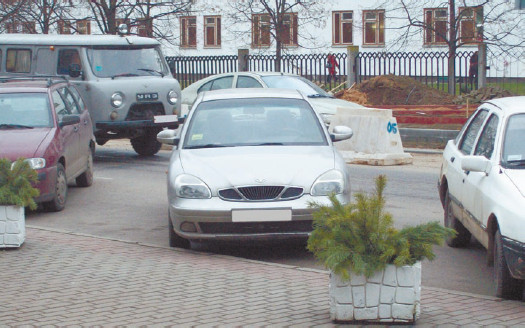
Рис. 2.1. Неуверенность в себе видна даже на парковке – автомобиль занимает слишком много места. Если поставить автомобиль как следует, освободилось бы место еще для одной машины
Как-то автор присутствовал при сцене, когда инструктор похвалил курсанта за отличное поведение в сложной ситуации: на учебный автомобиль во время тренировки в городском режиме чуть не налетела иномарка с пьяным водителем, и курсант очень грамотно ушел от столкновения. Курсант объяснил, что он, конечно, старался, но до конца не был уверен, что все делает правильно, и убежден, что инструктор корректировал его действия. Когда же курсант вспомнил, что в распоряжении инструктора были только педали управления, но второго рулевого колеса в автомобиле не было, он запаниковал. Во время происшествия у него совершенно вылетели из головы особенности управления учебным автомобилем и он прекрасно справился сам, но, как выяснилось, спокойствие базировалось исключительно на надежде на инструктора. Такой курсант, уже получив права и попав в нештатную ситуацию на дороге, где нет никаких инструкторов, может растеряться и запаниковать просто потому, что помощи ждать неоткуда, – это первая и основная ошибка новичков за рулем.
Именно неуверенные в себе молодые водители больше всего страдают от неадекватного поведения в нештатной ситуации. Когда времени на принятие решения и его реализацию очень мало, они могут даже бросить руль – чаще всего так поступают начинающие водители-женщины, но и не все мужчины сохраняют трезвую голову в экстремальных условиях (рис. 2.2).
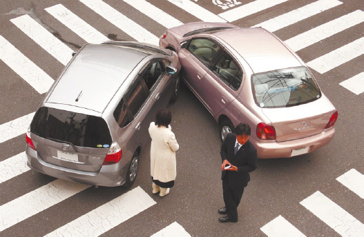
Рис. 2.2. «Теплая» встреча участников ДТП
Но существуют ошибки и другого рода, некоторые – прямо противоположные неуверенности. К этой группе относится неоправданно рискованное поведение на дороге, обычно сопровождающееся целенаправленным несоблюдением ПДД.
Подобным образом ведут себя те новички, которые в результате получения прав приобретают и уверенность в том, что они уже – асы вождения, мастера-водители экстра-класса. В результате – превышение скорости (особенно этим грешат те, кто приобрел дорогой, новый автомобиль и так и жаждет показать себя на дороге, а также молодые владельцы отечественных автомобилей, которым необходимо показать, что они не хуже других), отвлеченное внимание в процессе движения (разговоры по мобильному телефону без соответствующих аксессуаров (рис. 2.3), слишком громкая музыка, еда и питье, чтение SMS-сообщений, а то и ответы на них), несоблюдение дистанции безопасности (рис. 2.4), лихачество (подрезание, неоправданные и резкие перестроения, которые вводят других водителей в заблуждение).
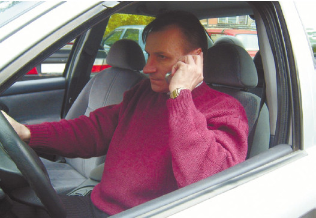
Рис. 2.3. Руление одной рукой в сочетании с беседой по телефону – верный путь к ДТП
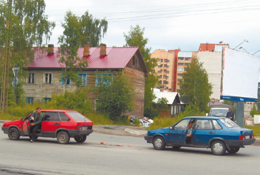
Рис. 2.4. Один затормозил, а второй не успел
Статистика утверждает, что причиной около трети всех ДТП со смертельным исходом является превышение скорости, а ведь если скорость превышает еще неопытный водитель, новичок на дороге, то шансов справиться с возможной экстремальной, внештатной ситуацией (к примеру, выскочивший на дорогу пешеход) у него практически нет. Большой процент ДТП приходится также на невнимательность за рулем – для новичков это еще более критично, хотя и для опытных водителей может быть чревато неприятными последствиями.
Примечание
Подача звукового сигнала и моргание дальним светом не дает права преимущественного проезда, хотя и является общепринятым сигналом о просьбе уступить полосу движения. Пользоваться этим сигналом следует только в случае настоящей необходимости, а не потому, что вам захотелось прокатиться «с ветерком» от светофора к светофору
Но лихачество – не только превышение скорости и рискованные маневры. Это еще может быть и расположение рук на рулевом колесе. Особенно этим страдают молодые водители, недавно севшие за руль собственного (первого!) автомобиля. Они склонны манипулировать рулевым колесом одной рукой, а то и кончиками пальцев, особенно если рядом с ними симпатичные пассажиры противоположного пола. В этом случае отсутствует обратная связь с колесами автомобиля, а неожиданный наезд на препятствие (к примеру, на камень) может вырвать руль из рук, и автомобиль потеряет управление, что нередко и происходит.
Легко касаясь руля пальцами и ладонью, практически невозможно справиться с экстремальной ситуацией. Руление в нештатном режиме требует участия обеих рук (рис. 2.5), и даже секунда, которую приходится потратить на то, чтобы перехватить руль, может оказаться фатальной (за эту секунду автомобиль может проехать как раз те метры, которые отделяли опасную ситуацию от ДТП).
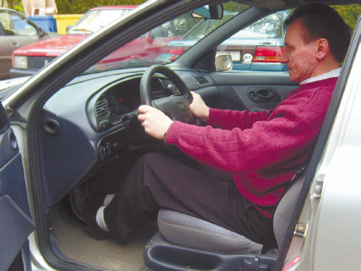
Рис. 2.5. Удобная посадка водителя и контроль рулевого колеса обеими руками обеспечивают безопасность на дороге
Следует заметить, что руление одной рукой – вовсе не прерогатива слишком уверенных в себе новичков. Их прямая противоположность – неуверенные, опасающиеся всего новички-водители также частенько манипулируют рулевым колесом одной рукой, вторая при этом располагается на рукоятке переключения коробки передач (рис. 2.6). Что любопытно, в эту рукоятку вцепляются, как в спасательный круг, даже на автомобилях с автоматической КПП, то есть там, где вообще не требуется переключать передачи! Этим чаще «болеют» новички, которые обучались вождению на автомобиле с механической коробкой передач.
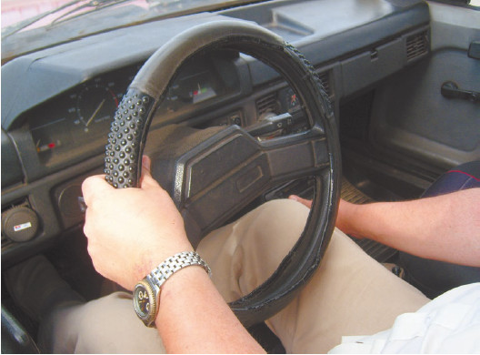
Рис. 2.6. Одна рука на руле, вторая – на рукояти переключения коробки передач – гарантия ДТП при намеке на нештатную ситуацию
Пытаясь одновременно контролировать и рулевое колесо, и коробку передач, такой новичок-водитель считает, что он максимально владеет ситуацией. На самом деле все с точностью до наоборот. В экстремальных обстоятельствах гораздо важнее контролировать рулевое колесо, и руление одной рукой не только не предотвращает, но даже провоцирует нештатные ситуации на дороге.
Совет
В школах высшего водительского мастерства рекомендуют класть большие пальцы рук на обод рулевого колеса, чтобы лучше чувствовать сцепление колес автомобиля с дорожным покрытием. Можно сказать, что при таком положении рук на руле водитель буквально чувствует дорогу руками. Это гораздо актуальнее для любого водителя, чем поглаживание рукоятки коробки переключения передач, и позволяет действительно контролировать дорожную ситуацию, особенно на скользкой дороге, когда коэффициент сцепления покрышек с дорожным покрытием недостаточен.
Правильной посадке за рулем тоже редко обучают в автошколах. В результате водитель-новичок частенько считает, что для лучшей обзорности следует поднять сиденье по максимуму (высоко сижу – далеко гляжу!) (рис. 2.7), а оптимальный контроль рулевого колеса обеспечит максимальное приближение к этому самому колесу (то есть придвигается к рулю так, что он просто упирается в живот).
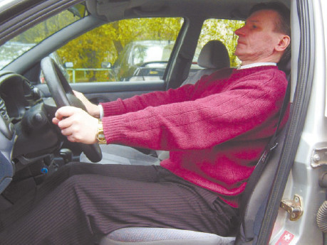
Рис. 2.7. Такая посадка за рулем не обеспечивает лучшей обзорности, но затрудняет манипулирование рулем и педалями
Результатом является ограничение способности манипулировать рулем, а также педалями: в зависимости от роста либо до них тяжело дотянуться, либо колени водителя слишком высоко поднимаются, мешая повороту руля и затрудняя движения ног на педалях (рис. 2.8).
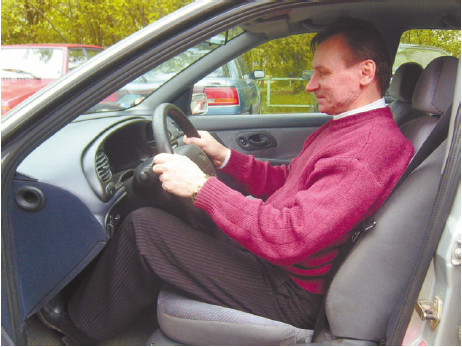
Рис. 2.8. Если придвинуться к рулю слишком близко, то манипулировать педалями очень неудобно, а при скоростном рулении наблюдается недостаточный ход руля
То же касается и манипуляций с рулевым колесом: женщины-водители, только что окончившие автошколу, склонны «доить» руль (поворот осуществляется частым перебором рулевого колеса «доящими» движениями), а мужчины – лихо поворачивать рулевое колесо раскрытой ладонью. В первую очередь это связано с неверным базовым положением рук на рулевом колесе. Водитель-новичок держит руки либо в верхнем секторе и буквально ложится на руль, стремясь приблизить лицо к лобовому стеклу (для улучшения обзора!), либо, напротив, – размещает руки в нижней части рулевого колеса (таким образом якобы можно повернуть руль за один прием на больший угол). Результатом является невозможность скоростного руления в экстремальной ситуации, и новичок с неизбежностью попадает в ДТП, которое можно было предотвратить своевременными действиями.
Совет
Есть простое правило относительно того, как нужно сидеть за рулем: следует отрегулировать сиденье так, чтобы при выжимании педали сцепления нога могла полностью выпрямиться. Угол наклона спинки и расстояние до руля регулируются таким образом, чтобы при выпрямленных руках запястья могли коснуться рулевого колеса. Руки на руле располагаются в положении «10 часов» и «2 часа» (представьте, что рулевое колесо – часовой циферблат, следовательно, левая рука помещается туда, где была бы цифра 10, а правая – туда, где находилась бы цифра 2). При такой исходной позиции руки можно вообще не снимать с руля при небольших поворотах, а при больших – легко выполняется перехват
Новичка можно определить еще по одному признаку – он не столько держит руль, контролируя его, сколько держится за руль, при этом сжимает рулевое колесо слишком сильно, в результате чего руки быстро устают. При мышечной усталости снижается скорость манипулирования рулевым колесом, что крайне нежелательно в экстремальной ситуации.
«Болезнью» новичков является и плохое чувство габаритов своего автомобиля. Обучение обычно проводится на других машинах, с другими габаритами, поэтому нередко начинающий водитель не вписывается в место на стоянке или парковке, даже в ворота гаража.
Такие аварии в основном мелкие, но неприятные (никому не хочется признаваться, что блок-фара была потеряна в результате въезда в гараж).
Хуже у начинающих водителей дела обстоят с ориентацией по зеркалам, особенно при движении задним ходом: хорошо отрегулированные зеркала дают больше информации, чем взгляд через плечо (рис. 2.9).
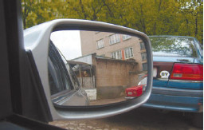
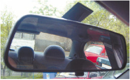
Рис. 2.9. Для полного контроля необходимо пользоваться не только боковыми зеркалами, но и зеркалом заднего вида
В автошколах в основном обучают контролировать ситуацию сзади автомобиля поворотом корпуса (рис. 2.10), но при этом водитель практически не в состоянии увидеть, как перемещается капот автомобиля. И если требуется парковка во дворе, среди других автомобилей, то для полного контроля приходится постоянно крутить головой вперед-назад. В результате нормально не контролируется ни капот, ни багажник, и, двигаясь таким образом во дворе, можно сбить человека – «закрутившись», мало кто может оценить и габариты автомобиля, и расстояние до припаркованных автомобилей и человека.
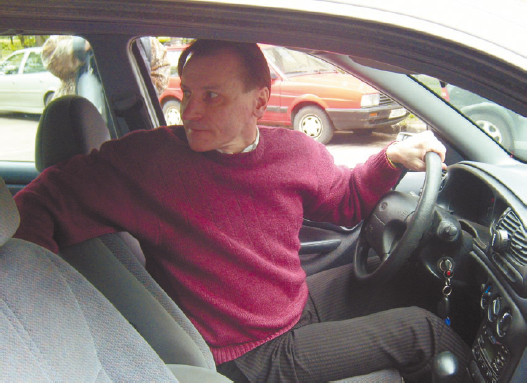
Рис. 2.10. Движение задним ходом при контроле дорожной ситуации с полным поворотом корпуса
Кроме того, еще не наученные горьким опытом молодые водители частенько забывают проверить, нет ли за автомобилем ребенка, которого ни в одно зеркало увидеть невозможно (а дети не так уж редко устраиваются играть за припаркованным автомобилем).
Еще один любимый фокус свежеиспеченных выпускников автошкол – езда на нейтральной передаче, особенно при движении под горку. Мотивировка – экономия топлива. Новичкам кажется, что именно так должны вести себя настоящие опытные водители, тем более что многие о подобном способе экономного вождения услышали от инструкторов автошкол. И начинается движение на нейтрали, даже по прямой, даже в повороте. Вот только подобная манера вождения – приглашение к ДТП. При движении на нейтральной передаче водитель практически не контролирует автомобиль. А ведь многие экстренные маневры требуют смены передачи, подгазовки и т. д. Секунды, потерянные на включение передачи, могут стать фатальными.
Если при движении по прямой в потоке других автомашин новичок еще может «спрятаться» (рис. 2.11), то на перекрестке его видно сразу. Как только речь заходит о том, чтобы тронуться с места на разрешающий сигнал светофора, автомобиль новичка либо заревет (перегазовка), либо заглохнет (недостаточная подача газа).
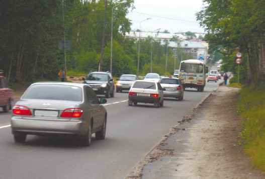
Рис. 2.11. Поток – самое спокойное место на дороге, но при этом нужно соблюдать безопасную дистанцию
Следует заметить, что второй вариант (заглохнуть на перекрестке) чреват не только раздраженными сигналами других участников дорожного движения (рис. 2.12). Сзади может оказаться особенно резвый и нетерпеливый водитель, который, рассчитывая на то, что впереди-стоящий тронется немедленно, как только загорится зеленый сигнал светофора, от всей души нажмет на педаль газа и, конечно же, окажется своим капотом в багажнике автомобиля водителя-новичка. Тут останется утешаться лишь тем, что виновен в ДТП другой водитель. Однако утешение слабое.
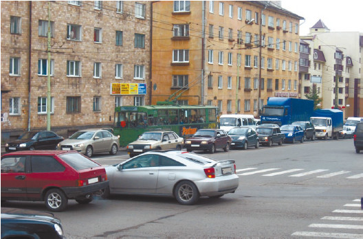
Рис. 2.12. Перекресток – тест для начинающего водителя
Первый вариант (перегазовка при трогании с места на светофоре) чреват не только повышенным ревом автомобиля, но и риском пережечь сцепление.
Совет
Особенно переживают женщины:
«Вот сейчас я заглохну! Что-то не так сделаю, и она заглохнет, а зеленый вот-вот загорится!» Накручивая себя подобным образом, можно добиться только того, что двигатель действительно заглохнет. В первую очередь нужно отбросить все страхи. Затем мягко нажать на педаль газа (учтите – автомобиль любит ласку) так, чтобы обороты двигателя возросли до 1300–1500 об/мин, а после этого начать плавно (мягко, ласково!) отпускать педаль сцепления и одновременно добавлять газ (мягко и ласково!).